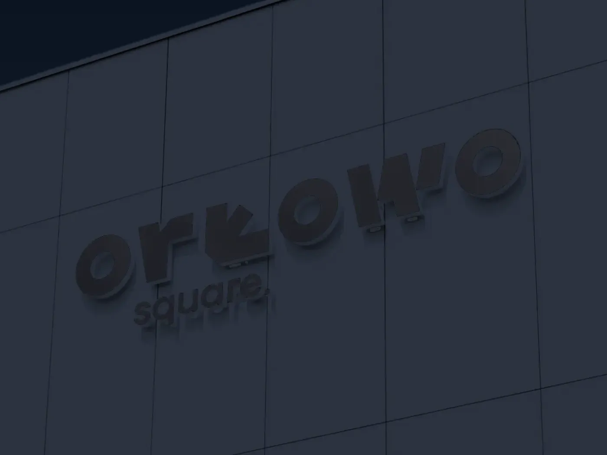
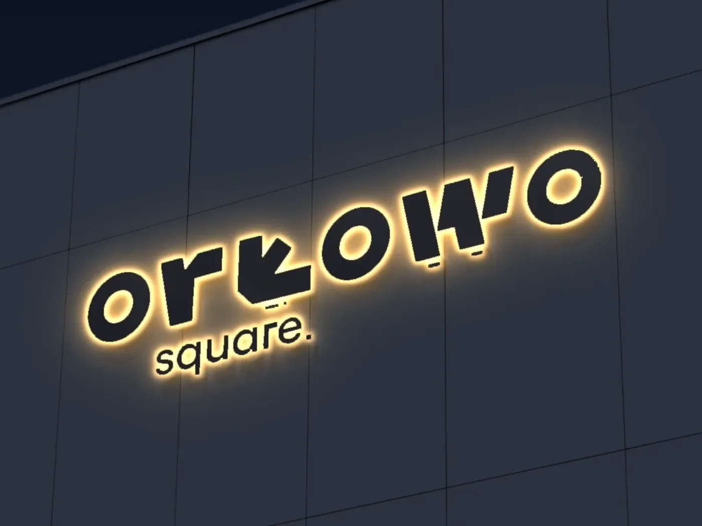

Reklama zewnętrzna · Gdynia
Szyldy reklamowe w Gdyni
Szyldy reklamowe w Gdyni wykonujemy dla sklepów, lokali usługowych, gabinetów, restauracji i biur, które chcą być lepiej widoczne z ulicy. Robimy klasyczne szyldy, litery przestrzenne i reklamę podświetlaną LED, od projektu po wykonanie. Wystarczy przesłać zdjęcie elewacji i wymiary, a przygotujemy propozycję i wycenę.


- [UZUPEŁNIJ]latdoświadczenia
- [UZUPEŁNIJ]+wykonanych szyldów
- 3szyldy · litery 3D · LED
- 1zdjęciewystarczy do wyceny
Dla kogo
Szyldy reklamowe Gdynia – co robimy i dla kogo
Jesteśmy agencją reklamy zewnętrznej z Gdyni. Zajmujemy się przede wszystkim szyldami reklamowymi, czyli oznakowaniem, po którym klient z daleka rozpozna Twoją firmę. Pracujemy z małymi i średnimi firmami, które potrzebują jednego szyldu nad wejściem, a także z tymi, które oznakowują kilka lokali.
Najczęściej zgłaszają się do nas:
- Sklepy i punkty usługoweOtwierają nowy lokal lub zmieniają wizerunek.→
- Restauracje, kawiarnie i baryZależy im na widoczności także po zmroku.→
- Gabinety, salony i biuraPotrzebują estetycznego, czytelnego szyldu lub tablicy.→
- Firmy w biurowcach i pawilonachMuszą dopasować reklamę do zasad wspólnoty lub zarządcy budynku.→
Doświadczenie: [UZUPEŁNIJ: od kiedy działacie / ile szyldów wykonaliście – tylko prawdziwe dane].
Co robimy
Nasze usługi: szyldy, litery przestrzenne i reklama LED
Dobieramy rodzaj reklamy do budynku, budżetu i tego, jak daleko szyld ma być widoczny. Główne usługi:
Szyldy reklamowe
Płaskie tablice, kasetony i szyldy na elewację, np. z dibondu, PCV lub plexi, z nadrukiem lub oklejeniem folią. Szczegóły znajdziesz na stronie szyldy reklamowe Gdynia.
Litery przestrzenne
Logo i napisy 3D, bez podświetlenia lub podświetlane, montowane bezpośrednio na ścianie albo na dystansach. Więcej na stronie litery przestrzenne Gdynia.
Reklama LED
Kasetony i litery podświetlane diodami LED, dzięki którym firma jest widoczna także wieczorem i zimą. Zobacz reklama LED Gdynia.
Stosowane materiały: [UZUPEŁNIJ: lista materiałów, z którymi faktycznie pracujecie]. Montaż: [UZUPEŁNIJ: czy montujecie sami, czy przez partnera, i czy pomagacie przy zgodach od zarządcy budynku].
Realizacje
Realizacje i opinie klientów
Najlepiej ocenić naszą pracę po efektach. W galerii realizacje pokazujemy szyldy, litery przestrzenne i reklamy LED wykonane dla firm z Gdyni i okolic.


Opinie klientów: [UZUPEŁNIJ: prawdziwe opinie, np. z wizytówki Google, z imieniem lub nazwą firmy za zgodą klienta].
Wycena ze zdjęcia
Jak wygląda współpraca krok po kroku
Wyślij zdjęcie elewacji przez formularz obok – resztę bierzemy na siebie. Tak wygląda droga od zdjęcia do gotowego szyldu.
- Zapytanie – wysyłasz zdjęcie elewacji lub miejsca na szyld, przybliżone wymiary i logo (jeśli je masz).
- Konsultacja i propozycja – doradzamy rodzaj szyldu, materiał i podświetlenie, a potem przygotowujemy wycenę.
- Projekt i wizualizacja – pokazujemy, jak szyld będzie wyglądał na Twoim budynku. Poprawki wprowadzamy przed produkcją.
- Produkcja – po akceptacji projektu wykonujemy szyld. Czas realizacji: [UZUPEŁNIJ: typowy czas wykonania].
- Montaż i odbiór – [UZUPEŁNIJ: jak wygląda montaż i odbiór u Was].
Co przesyłasz:
- zdjęcie elewacji zrobione na wprost – wystarczy z telefonu,
- telefon lub e-mail, żebyśmy mogli odpowiedzieć,
- opcjonalnie: przybliżone wymiary (jeśli ich nie znasz, zmierzysz je na zdjęciu w formularzu) i logo.
Co dostajesz:
- wycenę, w której wypisujemy, co obejmuje oferta – dodatkowe pozycje zaznaczamy osobno,
- propozycję 1–2 wariantów w różnych cenach, jeśli nie wiesz, co wybrać,
- wizualizację szyldu na zdjęciu Twojego budynku przed produkcją [UZUPEŁNIJ: czy wizualizacja jest bezpłatna],
- odpowiedź w ciągu [UZUPEŁNIJ: czas odpowiedzi, np. 1 dnia roboczego].
Jeśli nie masz jeszcze logo ani pomysłu na wygląd szyldu, napisz o tym w zapytaniu. [UZUPEŁNIJ: czy oferujecie projekt graficzny od zera].
Wyślij zdjęcie do wyceny
Cena
Od czego zależy cena szyldu reklamowego
Każdy szyld wyceniamy indywidualnie, bo dwa podobne napisy mogą się bardzo różnić kosztem. Na cenę wpływają przede wszystkim:
- wymiary szyldu lub wysokość liter,
- rodzaj i grubość materiału, np. dibond, plexi, PCV, stal,
- podświetlenie LED – czy jest potrzebne i jakiego typu,
- stopień skomplikowania logo i liczba elementów,
- montaż – wysokość, rodzaj elewacji, potrzeba podnośnika lub rusztowania,
- projekt graficzny – czy masz gotowe pliki, czy trzeba je przygotować.
Orientacyjne ceny znajdziesz w cenniku: [UZUPEŁNIJ: przykładowe widełki cenowe]. Dokładną kwotę podamy po otrzymaniu zdjęcia i wymiarów.
Gdzie działamy
Szyldy reklamowe w Gdyni i okolicy – obszar działania i kontakt
Działamy w Gdyni we wszystkich dzielnicach, od Śródmieścia, przez Redłowo i Orłowo, po Chylonię i Obłuże. [UZUPEŁNIJ: czy obsługujecie też Sopot, Gdańsk, Rumię, Redę, Wejherowo i resztę Pomorza].
- Telefon[UZUPEŁNIJ: numer telefonu]
- E-mail[UZUPEŁNIJ: adres e-mail]
- Adres[UZUPEŁNIJ: ulica i numer], [UZUPEŁNIJ: kod pocztowy] Gdynia
- Godziny pracypn–pt: [UZUPEŁNIJ: godziny], sobota: [UZUPEŁNIJ: godziny lub „nieczynne”], niedziela: nieczynne
Najszybciej przygotujemy wycenę, jeśli przez formularz na stronie kontakt prześlesz zdjęcie miejsca montażu i przybliżone wymiary.
FAQ
Pytania i odpowiedzi
Ile kosztuje szyld reklamowy w Gdyni?
Cena zależy od wymiarów, materiału, podświetlenia i sposobu montażu, dlatego każdy szyld wyceniamy indywidualnie. Orientacyjnie: [UZUPEŁNIJ: przykładowe widełki cenowe]. Dokładną wycenę przygotujemy po otrzymaniu zdjęcia elewacji i wymiarów.
Jak długo trwa wykonanie szyldu?
Czas realizacji zależy od rodzaju reklamy i obłożenia produkcji. Prosty szyld zwykle powstaje szybciej niż litery przestrzenne z podświetleniem LED. U nas typowy czas to [UZUPEŁNIJ: liczba dni roboczych od akceptacji projektu].
Czy zajmujecie się też montażem szyldu?
[UZUPEŁNIJ: czy montaż wykonujecie sami, czy przez partnera, i na jakim obszarze]. Przed montażem warto sprawdzić, czy wspólnota, zarządca budynku lub urząd nie wymagają zgody na umieszczenie reklamy. Gdynia ma też uchwałę krajobrazową, która może określać zasady dla szyldów.
Z jakich materiałów robicie szyldy?
Dobieramy materiał do miejsca i budżetu. Najczęściej stosuje się dibond, PCV, plexi oraz litery przestrzenne z tworzywa lub metalu, z podświetleniem LED lub bez. U nas: [UZUPEŁNIJ: materiały, z którymi faktycznie pracujecie].
Czy dajecie gwarancję na szyldy i podświetlenie LED?
[UZUPEŁNIJ: okres i zakres gwarancji na szyldy oraz osobno na elementy LED i zasilacze]. W razie usterki wystarczy się z nami skontaktować, a ustalimy termin naprawy.
Nie mam logo ani projektu – czy możecie pomóc?
Tak, wystarczy, że opiszesz swoją firmę i pokażesz zdjęcie miejsca na szyld. [UZUPEŁNIJ: czy przygotowujecie projekt graficzny od zera i czy jest wliczony w cenę]. Przed produkcją zawsze dostaniesz wizualizację do akceptacji.
Wyślij zdjęcie – albo zadzwoń
Zapytaj o wycenę
Wyślij nam zdjęcie elewacji i przybliżone wymiary, a przygotujemy propozycję i wycenę szyldu dla Twojej firmy w Gdyni.